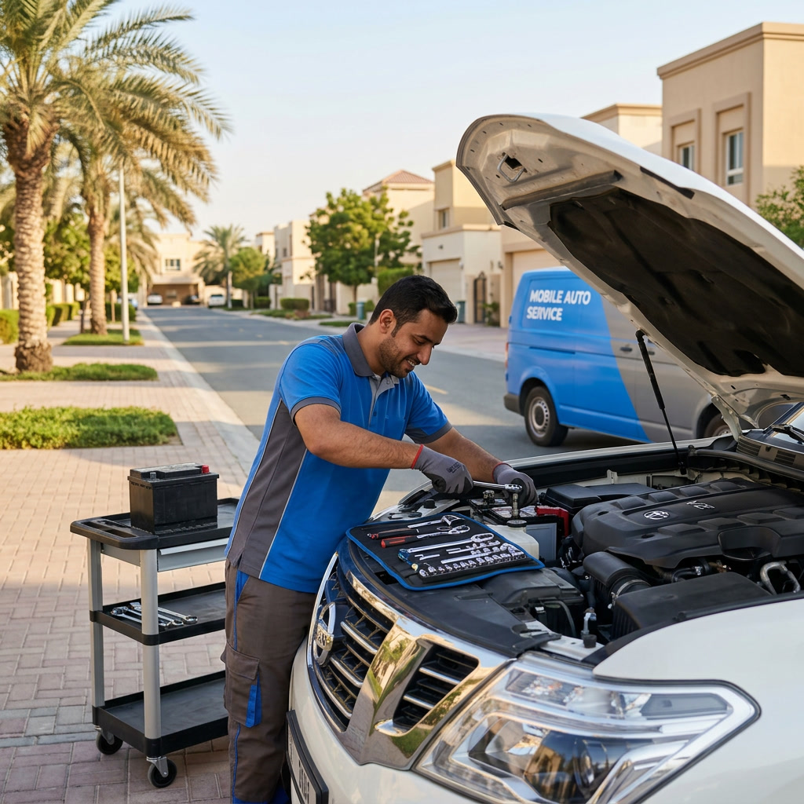

موقف القبو
أرسل اسم البرج وطابق القبو ورقم الموقف. واذكر أي حد للارتفاع عند المنحدر، وهل يحتاج الأمن إلى اسم الزائر أو رقم اللوحة قبل الدخول.
خدمة البطارية المنزلية لسكان جزيرة الريم
يصل الفني إلى سيارتك في موقف برجك السكني، يفحص البطارية ونظام الشحن، ويركب بطارية مناسبة في الموقف نفسه. لا حاجة لتحريك السيارة أو ترتيب زيارة إلى الورشة.

يقف معظم سكان جزيرة الريم في موقف مخصص تحت البرج أو بجانبه، وهناك تتم الزيارة. يحضر الفني معدات الفحص وبطارية مناسبة لسيارتك والأدوات اللازمة للتركيب، ويعمل في المساحة المحيطة بالسيارة.
لا نستبدل شيئاً قبل فحص البطارية ونظام الشحن. إذا كانت البطارية صالحة للاستخدام أو كان العطل في مكان آخر، نخبرك بما وجدناه بدلاً من بيع بطارية لا تحتاجها.
تتعامل الأبراج السكنية في جزيرة الريم مع الزوار بطرق مختلفة. معرفة نوع الموقف مسبقاً تساعد الفني على تخطيط الطريق إلى السيارة وتجنب الانتظار عند البوابة.
أرسل اسم البرج وطابق القبو ورقم الموقف. واذكر أي حد للارتفاع عند المنحدر، وهل يحتاج الأمن إلى اسم الزائر أو رقم اللوحة قبل الدخول.
أرسل طابق المنصة والمدخل المؤدي إليه ورقم الموقف. بعض المنصات لها بوابة خاصة بالسكان، فأخبرنا من يمكنه فتحها أو تسجيل الزيارة.
إذا كانت السيارة في موقف الزوار أو في الشارع أمام المبنى، أرسل الموقع على الخريطة ووصفاً قصيراً مثل أقرب مدخل أو معلم.
إذا كانت السيارة متوقفة في مكان آخر في المنزل، أخبرنا بطريقة الوصول ونؤكد لك إمكانية ترتيب الزيارة.
تطلب أبراج كثيرة من السكان تسجيل الزوار لدى مكتب الأمن أو عبر تطبيق المبنى. إذا كان مبناك يطبق ذلك، سجّل الزيارة قبل وصول الفني أو أخبرنا بمن يسأل عنه عند المكتب.
المنحدرات المنخفضة والمواقف الضيقة شائعة في القبو. أخبرنا إذا كانت السيارة محاصرة أو متوقفة بمقدمتها نحو الجدار أو في طابق سقفه منخفض، ليحضر الفني المعدات المناسبة ويعرف المساحة المتاحة لفتح غطاء المحرك.
الخدمة متاحة 24 ساعة طوال أيام الأسبوع، لذلك يمكن ترتيب الزيارة قبل مشوار الصباح أو بعد العودة المتأخرة أو في عطلة نهاية الأسبوع. أرسل الموقع وبيانات السيارة ونخبرك بوقت الوصول الحالي عند مراسلتنا.
في الزيارات المبكرة والمتأخرة تكون تفاصيل الدخول أهم. إذا كان مكتب الأمن يغير مناوبته ليلاً أو تُغلق بوابة الزوار في ساعة معينة، أخبرنا حتى لا ينتظر الفني عند المدخل.
لا يلزم أن تكون عند السيارة. يمكن لشخص مخوّل مثل أحد أفراد العائلة أو السائق أو موظف المبنى أو زميل يحمل المفتاح مقابلة الفني وفتح غطاء المحرك.
يبقى القرار بيدك. يرسل الفني نتيجة الفحص، وتوافق أنت على البطارية والسعر شامل التركيب عبر الهاتف أو واتساب قبل بدء العمل.
تبدأ البطاريات من 249 درهماً مع التركيب. يشمل السعر المؤكد البطارية والزيارة المتنقلة والتركيب القياسي والفحص وإزالة البطارية القديمة لإعادة التدوير والضمان المطبق، والذي يصل إلى 24 شهراً حسب الماركة.
| المرحلة | أنت أو الشخص المخوّل | الفني |
|---|---|---|
| قبل الزيارة | أرسل المبنى والطابق ورقم الموقف وماركة السيارة وموديلها وسنتها | يؤكد البطارية المناسبة والسعر شامل التركيب |
| الوصول | سجّل الزيارة أو قابل الفني ومعك المفتاح | يصل إلى السيارة ويتحقق من المساحة حولها |
| عند السيارة | افتح غطاء المحرك ووافق على السعر | يفحص البطارية ونظام الشحن ثم يركب البطارية عند الحاجة |
| بعد التركيب | ادفع نقداً أو بالبطاقة أو عبر تابي أو تمارا | يسجل البطارية عند الحاجة ويوضح الضمان ويأخذ البطارية القديمة لإعادة التدوير |
FAQ
غالباً نعم. أرسل اسم البرج وطابق القبو ورقم الموقف وتعليمات الدخول، واذكر أي حد للارتفاع ليخطط الفني طريقه إلى السيارة.
لا. يمكن لأحد أفراد العائلة أو السائق أو موظف المبنى أو زميل يحمل المفتاح مقابلة الفني، وتوافق أنت على البطارية والسعر عبر الهاتف أو واتساب.
نخطط الزيارات المنزلية حول الأبراج السكنية، بما فيها مواقف القبو والمنصات والزوار. إذا كانت سيارتك متوقفة في مكان آخر في المنزل، أخبرنا بطريقة الوصول ونؤكد لك.
ليس تلقائياً. نفحص البطارية ونظام الشحن أولاً، وإذا كانت البطارية صالحة أو كانت المشكلة في مكان آخر نخبرك بذلك.
تبدأ البطاريات من 249 درهماً مع التركيب. يشمل السعر المؤكد البطارية والزيارة المتنقلة والتركيب القياسي والفحص وإزالة البطارية القديمة لإعادة التدوير والضمان المطبق.
نعم، الخدمة متاحة 24 ساعة. أرسل الموقع وبيانات السيارة ونخبرك بوقت الوصول الحالي عند مراسلتنا.
يزيلها الفني من السيارة ويأخذها لإعادة التدوير، فلا يبقى شيء في موقفك.
خدمة متنقلة في جزيرة الريم
أرسل اسم المبنى وطابق الموقف ورقم الموقف وبيانات السيارة، ونؤكد لك البطارية المناسبة والسعر شامل التركيب ووقت الوصول الحالي.